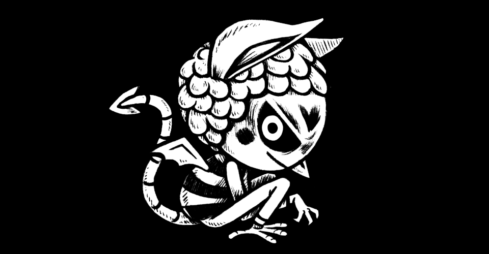

About
About Projects
Projects Books
Books Games
Games Stories
Stories Store
Store Collection
Collection Notes
NotesRek Bell is my artist handle, short form of Rekka Bellum. I don't mind being called either, but I prefer the gender neutral Rek. People also call me Jesse, used by close friends and family, which is also gender-neutral and closer to my legal name.
- Writes stories.
- Lives on pino(since 2016).
- Speaks Canadian French, English, some Japanese.
- Gender agnostic, if you must talk about me use gender neutral pronouns.
I am a cartoonist and sailor.
I am currently based in the Salish Sea, where the weather is mild and kinder to sailboats, but my heart is in Québec. I enjoy drawing by hand with ink, and am fond of long ocean passages, tattoos, lacto-fermentation, bikes, and sea birds.

 With the project hundredrabbits, I write about permacomputing, practical liveaboard skills/knowledge, and food preservation, while producing fun art projects with devine.
With the project hundredrabbits, I write about permacomputing, practical liveaboard skills/knowledge, and food preservation, while producing fun art projects with devine.
Living on a boat with the goal of conserving energy use has shaped how I work in a very big way. My studio is powered by 190W of solar. I prioritize art done on paper. Digital works are done with the tools of my studio and/or with open-source software(Gimp). My art is now either raster(see hakum), or pixelated(see oquonie). For more details on how I work, read this article I wrote named Working Offgrid Efficiently.
I make art for magazines, children's books, as well as visuals for software and games (see publications). My first self-published game oquonie was nominated for a visual arts award at the 2015 Independent Games Festival in San Francisco. In 2020 I published busy doing nothing, a book documenting my 50-day sail from Shimoda to Victoria.
View...
- My full list publications
- All the projects I've released
- My press appearances
- The tools that I use.
- View my resume.
- Ways to contact me
I spend my days documenting repairs on the boat, making recipes for grimgrains, as well as making small art projects, illustration and toys. I also take commissions.
My partner devine & I lived in japan for two years(2012-2014), and after returning to Canada we decided to try and return there by sailboat. And so, from 2016 to 2020, we circumnavigated the Pacific Ocean by sail, passing through Mexico, French Polynesia, Cook Islands, Niue, Tonga, New Zealand, Fiji, The Marshall Islands and Japan.
 I've been making websites since I was a teenager, I would farm free geocities space by hot-linking between mutiple accounts—I've since abandoned that practice. These days, I enjoy making and maintaining simple websites. I manage Grimgrains, and 100r.co.
I've been making websites since I was a teenager, I would farm free geocities space by hot-linking between mutiple accounts—I've since abandoned that practice. These days, I enjoy making and maintaining simple websites. I manage Grimgrains, and 100r.co.
Contact
Contact me for art, cormorant, or website related inquiries. I am not interested in producing NFTs for anyone, nor do I accept crypto payments.
Small online community involvement
In the early 2000's I was known as "Esse" online. I was active in the FDD(fictional digidestined) community, with the websites The Forgotten Digidestined(1999-2006), Esse's Digimon Adoptions(2001-2005) later, EDA became Sagari-Cross(2005-2009) hosted by Legend (injenn.net) until I started self-hosting the site myself. I hosted a forum (Zephopolis) where I would roleplay characters with friends. Back then, roleplaying with friends online was a big part of my life. In 2005 Sagari-Cross became predominantly a portfolio website (it's sad that this happened). In 2011 I changed my domain name to kokorobot.ca.
Later, I discovered art hosting sites like DeviantArt(Esserawks & Mintenko, accounts no longer online) and SheezyArt, and spent a lot of time on CFSL and the Isopharmacy forums. Isopharmacy was an artistic community, we would create art challenges and talk about art, games etc. In 2010, myself and Devine created the studio drownspire. Together we designed and sold small figurines (vambits), apparel, jewelery and books. At the time, I helped organized Drink & Draw events in Montreal. These events inspired the creation of art books (Erri) and the comic collective Merure. We released 3 Merure books in total, under the non-profit name of MachineMachine.
Now, I hang around the merveilles community on Mastodon.
Experience
In high school, I enjoyed working with wood and worked on many physical art projects.
I completed a two-year creative arts program at the Champlain Regional College on the south shore of Montreal(2002-2004), where I learned how to do digital art, movie-making, as well as sculpture and painting (it was a very varied program). While there, I helped found the Visual Arts Club in the school.
Then I attended the Cégep du Vieux Montréal and enrolled in their excellent 2d animation course(2005-2008), where I produced the short film uno.
From 2007 to 2016, I worked in-house at a variety of art, game and animation studios like Mandarine 24, Volta, Pascal Blais Studio and Sava Transmédia. In 2012, I moved to Japan and worked at a—then small— animation studio in Shinjuku. I moved back to Montréal in 2014 and worked at Hibernum Créations and Télé-Québec. Throughout my career, I did a lot of freelance work for edition companies, illustrating children's books for ERPI, Boréal, Courte-Echelle, Transcontinental, Druide, Bayard Canada etc. After 2016, I focused on making projects for hundredrabbits.